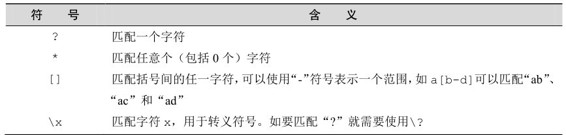

3.1 热身
在介绍 Redis 的数据类型之前，我们先来了解几个比较基础的命令作为热身，赶快打开redis-cli，跟着样例亲自输入命令来体验一下吧！
1．获得符合规则的键名列表
KEYS pattern
pattern支持glob风格通配符格式，具体规则如表3-1所示。
表3-1 glob 风格通配符规则

现在Redis中空空如也（如果你从第2章开始就一直跟着本书的进度输入命令，此时数据库中可能还会有个foo键），为了演示KEYS命令，首先我们得给Redis加点料。使用SET命令（会在3.2节介绍）建立一个名为bar的键：
redis> SET bar 1
OK
然后使用 KEYS *就能获得Redis中所有的键了（当然由于数据库中只有一个bar键，所以 KEYS ba*或者 KEYS bar 等命令都能获得同样的结果）：
redis> KEYS *
1) "bar"
注意 KEYS命令需要遍历Redis中的所有键，当键的数量较多时会影响性能，不建议在生产环境中使用。
提示 Redis不区分命令大小写，但在本书中均会使用大写字母表示Redis 命令。
2．判断一个键是否存在
EXISTS key
如果键存在则返回整数类型1，否则返回0。例如：
redis> EXISTS bar
(integer) 1
redis> EXISTS noexists
(integer) 0
3．删除键
DEL key [key …]
可以删除一个或多个键，返回值是删除的键的个数。例如：
redis> DEL bar
(integer) 1
redis> DEL bar
(integer) 0
第二次执行DEL命令时因为bar键已经被删除了，实际上并没有删除任何键，所以返回0。
技巧 DEL 命令的参数不支持通配符，但我们可以结合Linux的管道和 xargs命令自己实现删除所有符合规则的键。比如要删除所有以“user:”开头的键，就可以执行redis-cli KEYS "user:*" | xargs redis-cli DEL。另外由于 DEL 命令支持多个键作为参数，所以还可以执行 redis-cli DEL `redis-cli KEYS "user:*"`来达到同样的效果，但是性能更好。
4．获得键值的数据类型
TYPE key
TYPE命令用来获得键值的数据类型，返回值可能是string（字符串类型）、hash（散列类型）、list（列表类型）、set（集合类型）、zset（有序集合类型）。例如：
redis> SET foo 1
OK
redis> TYPE foo
string
redis> LPUSH bar 1
(integer) 1
redis> TYPE bar
list
LPUSH命令的作用是向指定的列表类型键中增加一个元素，如果键不存在则创建它， 3.4节会详细介绍。